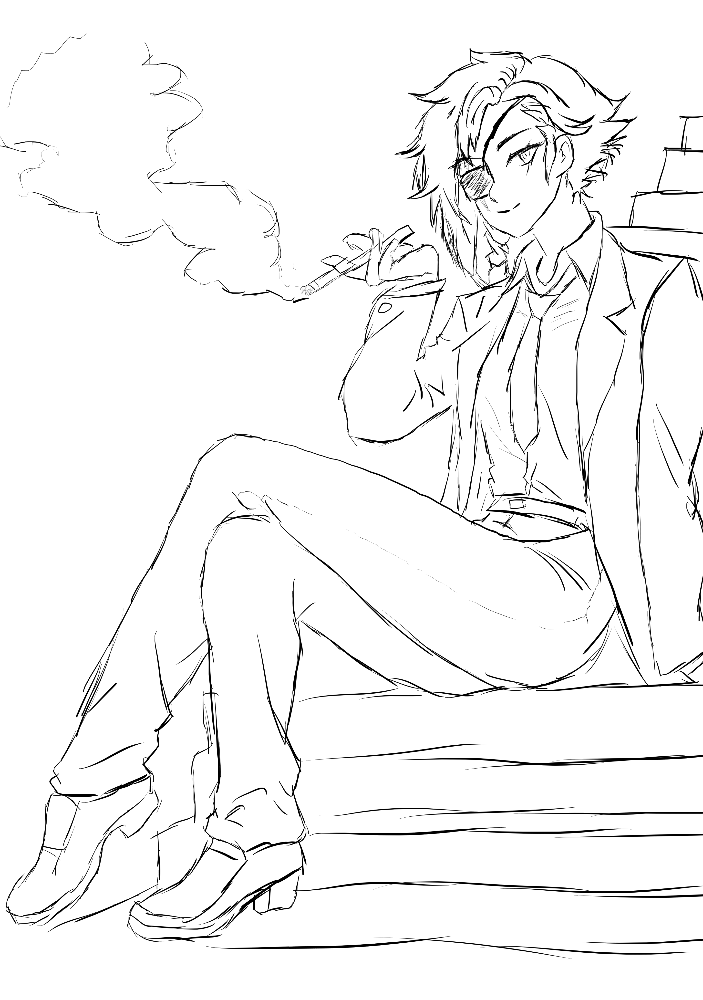

Title: Zaff Model
VTuber or virtual youtubers and content creators are a fairly new concept and I have contributed to that community when I was commissioned to draw a base for a model to be used in the creation of a virtual youtuber.

Title: M16A1
Sometimes, all you need to do is look at a strong woman wearing a tuxedo and smoking a cigarette. That is what my client told me and who am I to argue? I did this for free as I enjoyed doing it and the character is pleasing to stare at.